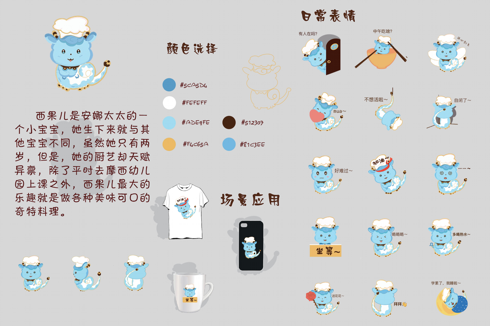

Character & IP Design · 2020
Sigur IP Design
March–June 2020
This project presents a character and IP design system developed around Sigur. Starting from the central character, I created a series of facial expressions and supporting visual elements.
The work presents Sigur’s front, side and back views, its colour palette, and applications across different scenarios.
Meet the Character
Character Introduction
Sigur is Mrs Anna’s little boy, born with an unusual gift for cooking. Although he is only two years old and still attends kindergarten, his greatest pleasure is inventing delicious and wonderfully peculiar dishes.
